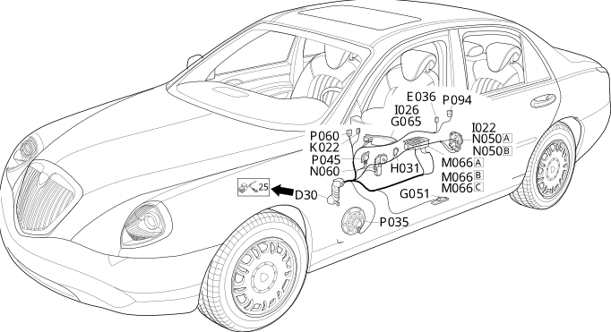

30 left front door
- Path
- Electrical equipment > Wiring > 30 left front door
- Kind
- wiring harness
- Applies to
- all engines; all production periods
- Interactive page
- https://sloeber94.github.io/elrnDB-lThss/en/#/207357
Applies to: all engines; all production periods

Topics that link to this page (18)
- D030 Left front door coupling(REAR)
- E036 Unit signalling driver's front door locking/unlocking(LEFT FRONT DOOR)
- G051 Left front door light (courtesy)(LEFT FRONT DOOR)
- G065 Left front door handle light(LEFT FRONT DOOR)
- H031 Adjustable/folding mirrors control(LEFT FRONT DOOR)
- I022 Switch on driver's exterior handle(LEFT FRONT DOOR)
- I026 Driver's front door locking/unlocking switch(LEFT FRONT DOOR)
- K022 Anti-crush safety sensor in driver's front door(LEFT FRONT DOOR)
- M066A Driver's door control unit (NPG)(LEFT FRONT DOOR)
- M066B Driver's door control unit (NPG)(LEFT FRONT DOOR)
- M066C Driver's door control unit (NPG)(LEFT FRONT DOOR)
- N050A Left front door lock geared motor(LEFT FRONT DOOR)
- N050B Left front door lock geared motor(LEFT FRONT DOOR)
- N060 Left front electric window motor(LEFT FRONT DOOR)
- P035 Speaker in left front door(LEFT FRONT DOOR)
- P045 Left front tweeter speaker(LEFT FRONT DOOR)
- P060 Left external rear view mirror(LEFT FRONT DOOR)
- P094 RF aerial on left front door for passive entry (NPE)(LEFT FRONT DOOR)